あわい / 2026-10-11 介入の見え方の直し
触った場所の変化を、画面で確かめる。
スマホで通し版を開く · 素材台帳 · 制作メモ
自動確認は破損と画面の変化の確認です。美しさ・面白さ・触れることへの気づきは、iPhoneとAndroidでの本人評価待ちです。
差は前のPNGと比較し、RGBの最大チャンネル差が12/255を超えた画素の面積と、その画素群の差平均を記録。画面は390×844と1280×800。測定画像は原寸PNGで、測定前後に縮小やJPEG圧縮はしていません。
数字の一覧（Chromium）
| 介入 | SP 最中：面積 / 平均差 | SP 後0.5秒 | PC 最中：面積 / 平均差 | PC 後0.5秒 |
|---|---|---|---|---|
| S0 豆の上の稜線・2.6秒 | 6.99% / 平均差 32.91/255 | 3.20% / 平均差 24.17/255 | 4.01% / 平均差 32.82/255 | 2.52% / 平均差 25.43/255 |
| S0 上1/3・2.6秒（記録のみ） | 5.53% / 平均差 24.00/255 | 1.80% / 平均差 17.14/255 | 3.53% / 平均差 23.66/255 | 2.14% / 平均差 19.27/255 |
| S2 中央・横ドラッグ | 6.09% / 平均差 18.02/255（仮） | 0.00% / 平均差 0.00/255 | 27.25% / 平均差 23.41/255 | 23.80% / 平均差 21.82/255 |
| S2 300ms停止後の横ドラッグ | 6.71% / 平均差 18.15/255（仮） | 0.00% / 平均差 0.00/255 | 27.25% / 平均差 23.41/255 | 24.04% / 平均差 21.92/255 |
| S3 p=0.15・タップとなぞり | 8.46% / 平均差 96.55/255 | 8.46% / 平均差 96.55/255 | 25.75% / 平均差 92.15/255 | 25.75% / 平均差 92.15/255 |
| S3 p=0.5・未染の所 | 8.46% / 平均差 96.55/255 | 8.46% / 平均差 96.55/255 | 25.79% / 平均差 92.03/255 | 25.79% / 平均差 92.03/255 |
| S4 中央・2.6秒 | 5.25% / 平均差 18.71/255 | 1.59% / 平均差 14.00/255 | 3.05% / 平均差 18.40/255 | 0.00% / 平均差 13.00/255 |
CPUを4倍遅くした設定
Chromium / 390×844 / CDP CPU throttling rate=4。描画処理1フレームの平均と最大を記録。fpsや実機の処理時間とは別の指標です。
| 期間 | 平均ms | 最大ms | 軽量モード |
|---|---|---|---|
| 全編 | 15.15 | 383.60 | あり |
| S3 30回なぞる前 | 19.51 | 25.50 | あり |
| S3 30回なぞった後 | 18.50 | 19.30 | あり |
S3平均の比 0.95倍。成熟染み 150個、広がり中 0個。成熟染みは非表示canvasに保持。
全面藍の色処理（仮）
新しい画像生成なし。元G1と同じ画素の輝度Yを保ち、RGBへ藍の色差を加算。もとの藍筋は彩度へ加算。黒布は同じYの0.45倍。圧縮後の平均輝度差はPC 1.29/255、SP 1.06/255。黒布と藍で明るさ差または青み差が12以上の画素はPC 94.24%、SP 98.09%。
Y=.2126R+.7152G+.0722B; c=min(.9Y+.15max(B-R,0),(255-Y)/1.370859); RGB=(Y-.6c,Y+.04c,Y+1.370859c); black=.45Y
PC：元G1 → 黒布 → 全面藍
SP：元G1 → 黒布 → 全面藍
構造・性能と残件
Chromium/WebKit×SP/PCで9区間、相談リンク、往復、染み保持、KASANE復帰、Canvas 1枚・WebGL要求0、reduced motionとJS無効を確認。記録した不具合：0。目安未達：3件。SPのネイティブ縦スワイプはChromiumで確認。WebKit SPは合成PointerEventのため、iPhoneの縦スワイプを確認した結果ではありません。
Lighthouseスマホ設定：LCP 1962.05ms / CLS 0 / TBT 0.00ms。INPは項目がなく未取得。EventTiming実験値 72ms（フィールドINPではありません）。100lvhはアドレスバーの伸縮で舞台の高さと時間軸を変えないため継続。
仮：S2の目の粗い麻素材（実機評価後に決める）、S3のG1色処理、元画像どうしの稜線の位置・曲率。操作の目安未達は下記にそのまま記録。
[
{
"browser": "chromium",
"size": "sp",
"case": "s2-drag",
"duringAreaPercent": 6.093844938631668,
"afterAreaPercent": 0,
"minimumAreaPercent": 10,
"persistenceRequired": false
},
{
"browser": "chromium",
"size": "sp",
"case": "s2-delayed-drag",
"duringAreaPercent": 6.708515615506137,
"afterAreaPercent": 0,
"minimumAreaPercent": 10,
"persistenceRequired": false
},
{
"browser": "webkit",
"size": "pc",
"case": "s0-ridge",
"duringAreaPercent": 0,
"afterAreaPercent": 2.6588541666666665,
"minimumAreaPercent": 4,
"persistenceRequired": false
}
]測定の全記録 · 負荷測定 · Lighthouse · 入力時間
触らずに通した録画
録画を直接開く。75秒のスクロール。ブラウザ画面の録画です。
chromium：介入の前・最中・後
S0 豆の上の稜線・2.6秒
PC / p=0.5 / 指の位置 921.60, 464.00 px
SP / p=0.5 / 指の位置 249.60, 505.76 px

S0 上1/3・2.6秒（記録のみ）
PC / p=0.5 / 指の位置 640.00, 266.67 px

SP / p=0.5 / 指の位置 195.00, 331.33 px
S2 中央・横ドラッグ
PC / p=0.5 / 指の位置 640.00, 400.00 px

SP / p=0.5 / 指の位置 195.00, 422.00 px / 仮（目安未達）

S2 300ms停止後の横ドラッグ
PC / p=0.5 / 指の位置 640.00, 400.00 px / 遅延はPC参考

SP / p=0.5 / 指の位置 195.00, 422.00 px / 仮（目安未達）

S3 p=0.15・タップとなぞり
PC / p=0.15 / 指の位置 230.40, 160.00 px

SP / p=0.15 / 指の位置 70.20, 168.80 px

S3 p=0.5・未染の所
PC / p=0.5 / 指の位置 230.40, 160.00 px

SP / p=0.5 / 指の位置 70.20, 168.80 px

S4 中央・2.6秒
PC / p=0.5 / 指の位置 640.00, 400.00 px
SP / p=0.5 / 指の位置 195.00, 472.00 px
chromium：5場面と4つのつなぎ
| 区間 | PC | SP |
|---|---|---|
| s0-membrane | 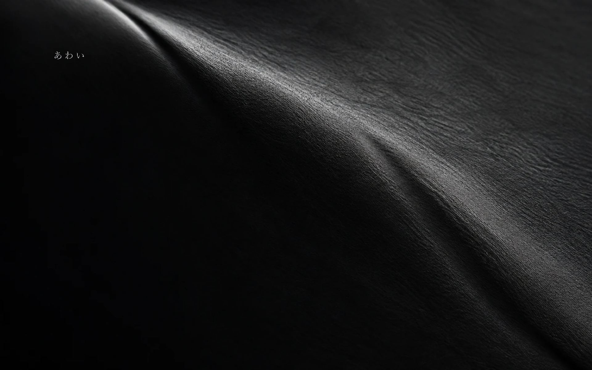 | |
| seam-01 | ||
| s1-suketo | ||
| seam-12 | 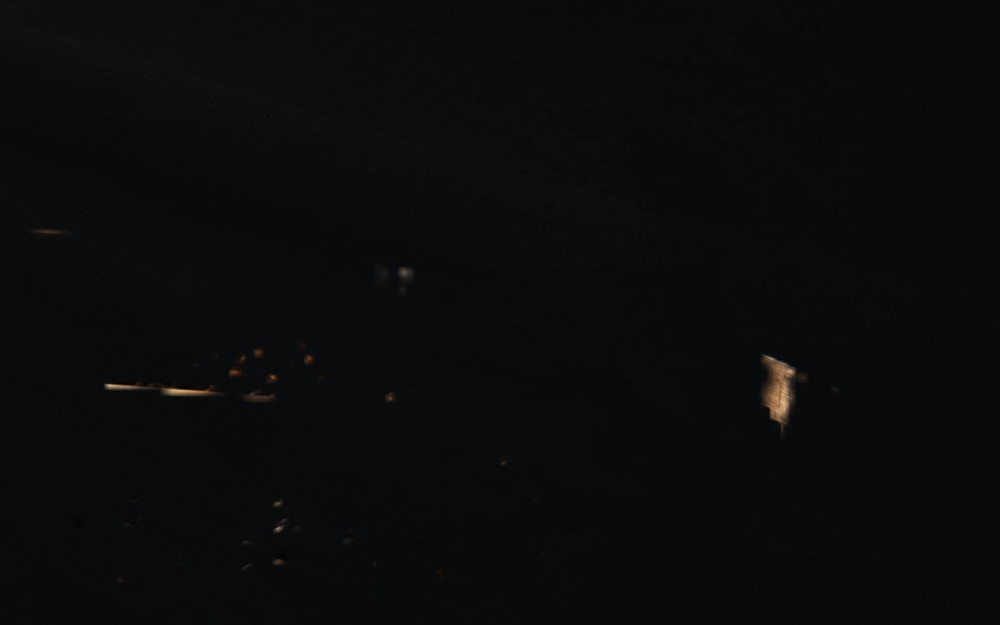 | 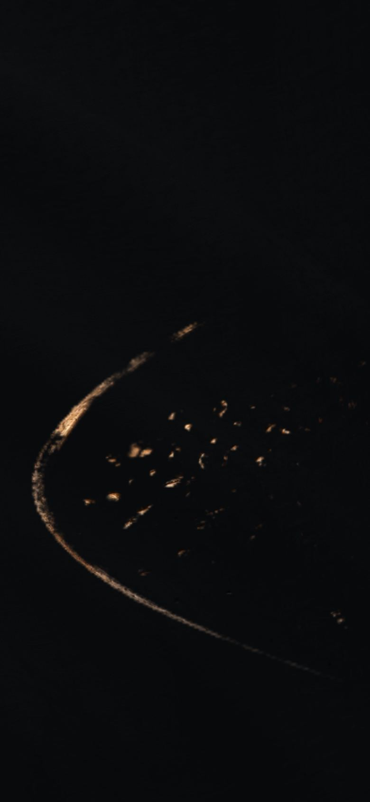 |
| s2-kasane | ||
| seam-23 | 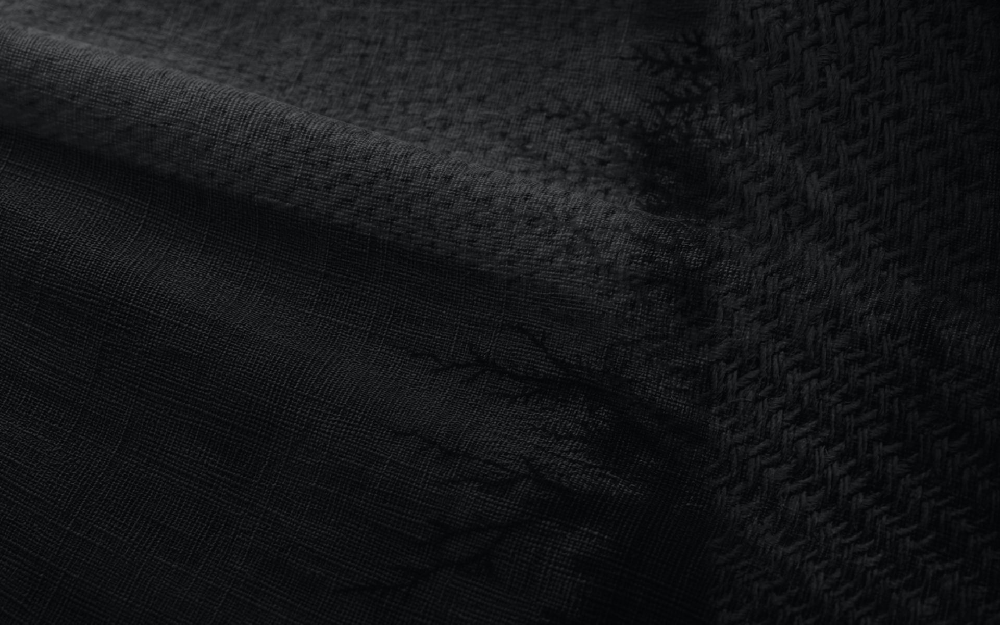 | 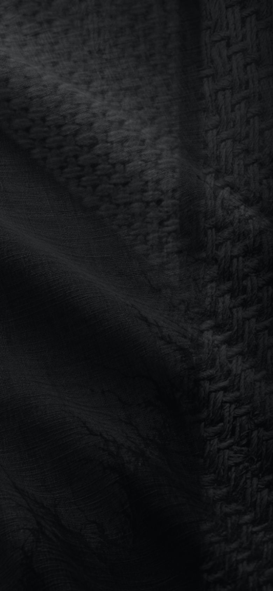 |
| s3-aima | 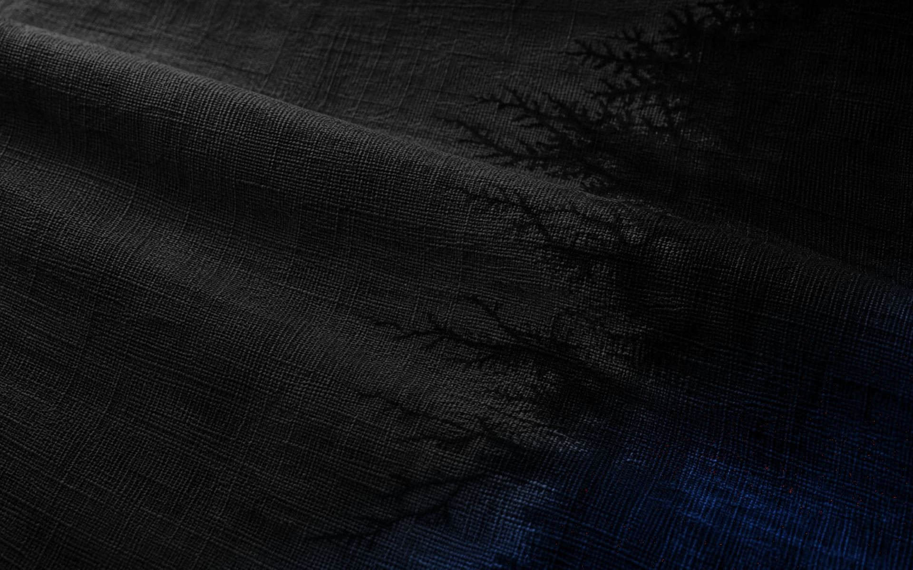 | 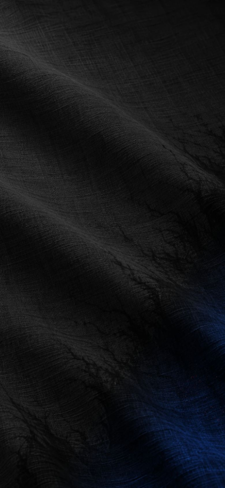 |
| seam-34 | 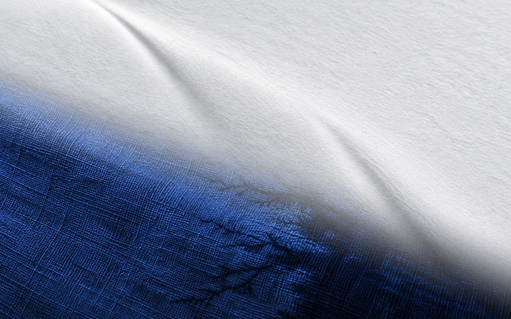 | 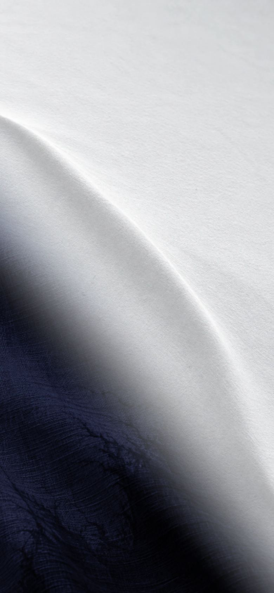 |
| s4-paper | 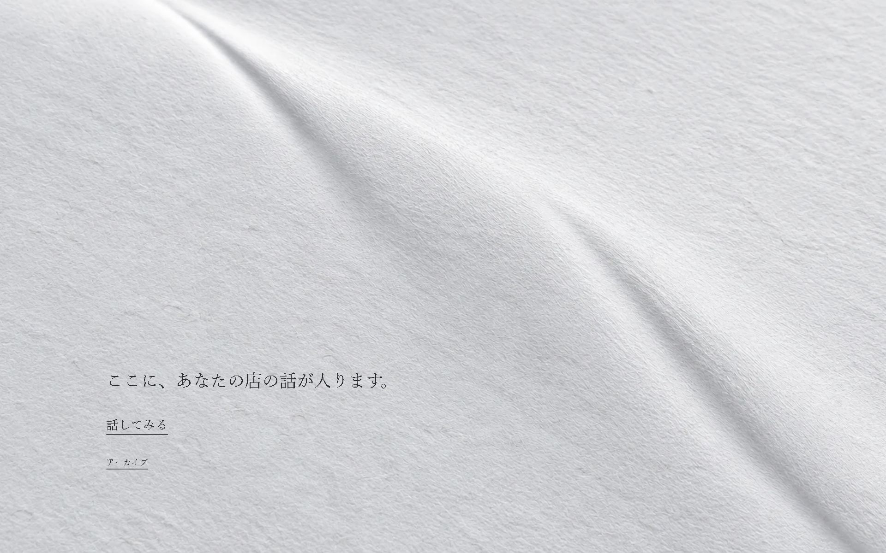 | 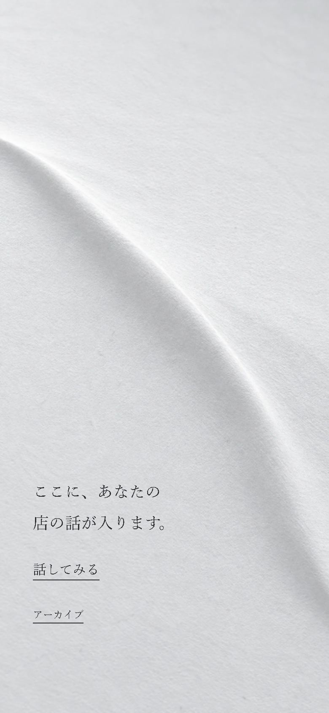 |
webkit：介入の前・最中・後
S0 豆の上の稜線・2.6秒
PC / p=0.5 / 指の位置 921.60, 464.00 px / 仮（目安未達）

SP / p=0.5 / 指の位置 249.60, 505.76 px

S0 上1/3・2.6秒（記録のみ）
PC / p=0.5 / 指の位置 640.00, 266.67 px

SP / p=0.5 / 指の位置 195.00, 331.33 px
S2 中央・横ドラッグ
PC / p=0.5 / 指の位置 640.00, 400.00 px

SP / p=0.5 / 指の位置 195.00, 422.00 px


S2 300ms停止後の横ドラッグ
PC / p=0.5 / 指の位置 640.00, 400.00 px / 遅延はPC参考

SP / p=0.5 / 指の位置 195.00, 422.00 px
S3 p=0.15・タップとなぞり
PC / p=0.15 / 指の位置 230.40, 160.00 px

SP / p=0.15 / 指の位置 70.20, 168.80 px

S3 p=0.5・未染の所
PC / p=0.5 / 指の位置 230.40, 160.00 px

SP / p=0.5 / 指の位置 70.20, 168.80 px


S4 中央・2.6秒
PC / p=0.5 / 指の位置 640.00, 400.00 px


SP / p=0.5 / 指の位置 195.00, 472.00 px


webkit：5場面と4つのつなぎ
| 区間 | PC | SP |
|---|---|---|
| s0-membrane | ||
| seam-01 | ||
| s1-suketo | ||
| seam-12 | ||
| s2-kasane | ||
| seam-23 | ||
| s3-aima | ||
| seam-34 | ||
| s4-paper |


仮のまま残す操作と紙の繊維
ChromiumのSP横ドラッグでは、最中のsnapshotがrestとなり移動量が戻り始めています。合成PointerEventのWebKit SPとの結果差があり、ネイティブタッチでの保持が不安定な点を仮とします。WebKit PCのS0は最中の画面差0%、離した後は変化あり。追加調整はしていません。
S4の中心40×40撮影画素の平均明るさはSP +25.01/255、PC +24.39/255。一方、上下左右の近傍平均からの細かい明暗の残差RMS比はSP 1.12、PC 1.18。繊維のコントラスト半減を示せていないため、この点は仮です。明るさと面積の目安だけを確認できています。
公開フォルダから外したファイル
古い写真スライド版と前回の介入画像、縮小用の旧スクリプトを除去。区間の中間画像は再撮影した同名の最新版に置き換えています。
build-interactive-review.cjs evidence/320-closing.jpg evidence/checks.json evidence/chromium-pc-s0-membrane-after.jpg evidence/chromium-pc-s0-membrane-before.jpg evidence/chromium-pc-s0-membrane-during.jpg evidence/chromium-pc-s2-kasane-after.jpg evidence/chromium-pc-s2-kasane-before.jpg evidence/chromium-pc-s2-kasane-during.jpg evidence/chromium-pc-s3-aima-after.jpg evidence/chromium-pc-s3-aima-before.jpg evidence/chromium-pc-s3-aima-during.jpg evidence/chromium-pc-s4-paper-after.jpg evidence/chromium-pc-s4-paper-before.jpg evidence/chromium-pc-s4-paper-during.jpg evidence/chromium-sp-s0-membrane-after.jpg evidence/chromium-sp-s0-membrane-before.jpg evidence/chromium-sp-s0-membrane-during.jpg evidence/chromium-sp-s2-kasane-after.jpg evidence/chromium-sp-s2-kasane-before.jpg evidence/chromium-sp-s2-kasane-during.jpg evidence/chromium-sp-s3-aima-after.jpg evidence/chromium-sp-s3-aima-before.jpg evidence/chromium-sp-s3-aima-during.jpg evidence/chromium-sp-s4-paper-after.jpg evidence/chromium-sp-s4-paper-before.jpg evidence/chromium-sp-s4-paper-during.jpg evidence/cut-sheet.jpg evidence/interactive-overview.jpg evidence/live-ending.jpg evidence/live-interactive.json evidence/live-review.jpg evidence/mobile-scroll.mp4 evidence/no-js.jpg evidence/pc-closing.jpg evidence/pc-cut1-after.jpg evidence/pc-cut1-before.jpg evidence/pc-cut2-after.jpg evidence/pc-cut2-before.jpg evidence/pc-cut3-after.jpg evidence/pc-cut3-before.jpg evidence/pc-cut4-after.jpg evidence/pc-cut4-before.jpg evidence/pc-opening.jpg evidence/recording.json evidence/screenshot-presentation.json evidence/sp-closing.jpg evidence/sp-cut1-after.jpg evidence/sp-cut1-before.jpg evidence/sp-cut2-after.jpg evidence/sp-cut2-before.jpg evidence/sp-cut3-after.jpg evidence/sp-cut3-before.jpg evidence/sp-cut4-after.jpg evidence/sp-cut4-before.jpg evidence/sp-opening.jpg evidence/webkit-pc-s0-membrane-after.jpg evidence/webkit-pc-s0-membrane-before.jpg evidence/webkit-pc-s0-membrane-during.jpg evidence/webkit-pc-s2-kasane-after.jpg evidence/webkit-pc-s2-kasane-before.jpg evidence/webkit-pc-s2-kasane-during.jpg evidence/webkit-pc-s3-aima-after.jpg evidence/webkit-pc-s3-aima-before.jpg evidence/webkit-pc-s3-aima-during.jpg evidence/webkit-pc-s4-paper-after.jpg evidence/webkit-pc-s4-paper-before.jpg evidence/webkit-pc-s4-paper-during.jpg evidence/webkit-sp-s0-membrane-after.jpg evidence/webkit-sp-s0-membrane-before.jpg evidence/webkit-sp-s0-membrane-during.jpg evidence/webkit-sp-s2-kasane-after.jpg evidence/webkit-sp-s2-kasane-before.jpg evidence/webkit-sp-s2-kasane-during.jpg evidence/webkit-sp-s3-aima-after.jpg evidence/webkit-sp-s3-aima-before.jpg evidence/webkit-sp-s3-aima-during.jpg evidence/webkit-sp-s4-paper-after.jpg evidence/webkit-sp-s4-paper-before.jpg evidence/webkit-sp-s4-paper-during.jpg finalize-evidence.cjs